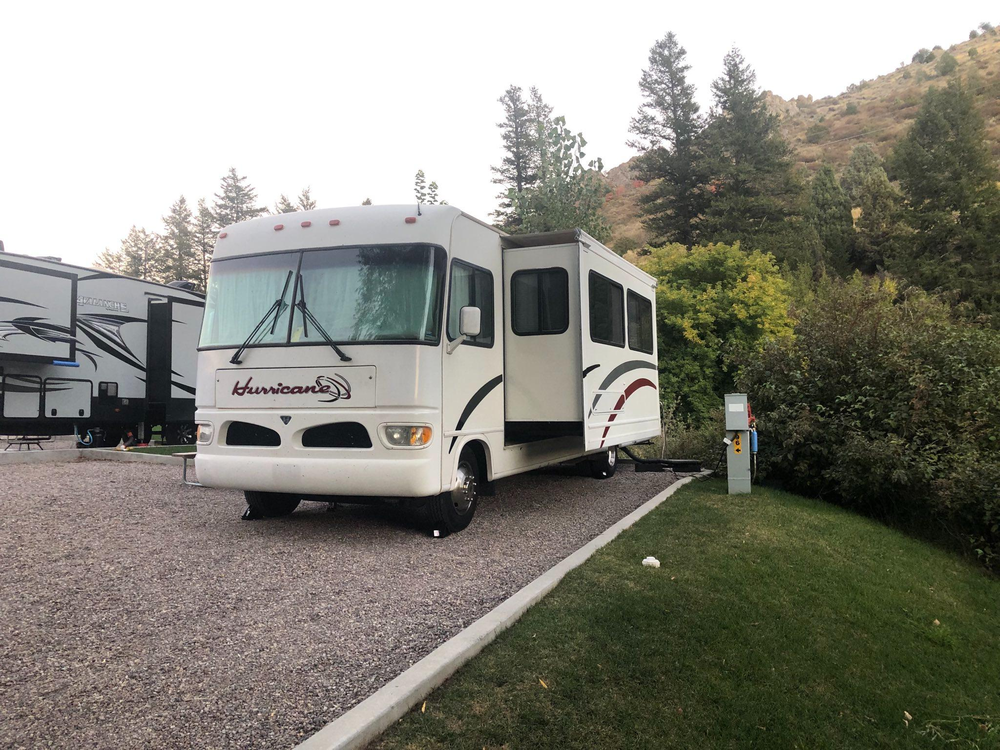
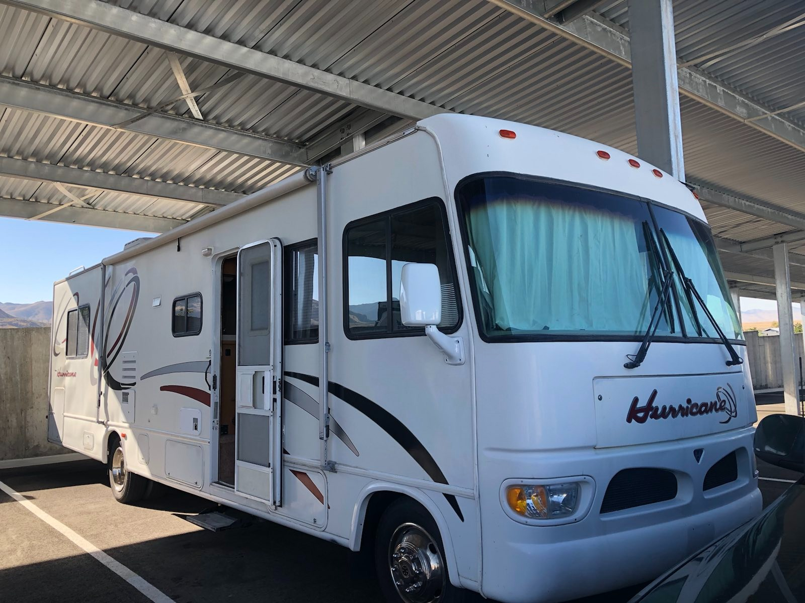

Home

Enjoying time in Lava Hot Springs
DIY help with the 2001-2003 Thor/Four Winds Hurricane
Welcome to Hurricane Adventures! This site if for those that have a 2000 -2003 Thor\Fourwinds Hurricane motorhome. I have searched for information relating to the electrical and plumbing systems so I can maintain them myself but have not been able to find it. If you are a DIY'er and have a Motorhome that is like this or similar to the one being described. This site is for you! I hope you find the information useful. I added sub pages of electrical and plumbing. These are among the most common questions I had when working on the coach/house part of the Motorhome. These systems require maintenance and proper care. It's sometimes difficult to do because RV's are not built with maintenance in mind.
